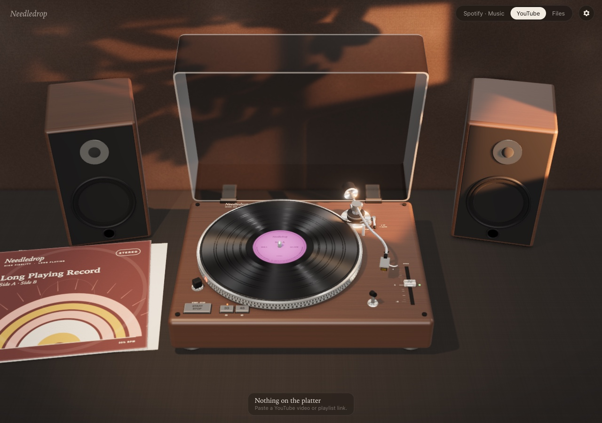

Whatever you're playing in Spotify, Apple Music, YouTube or your own files gets pressed onto a record. The platter spins up and the tonearm tracks across the grooves as the song plays.

Spotify and Apple Music on Mac, any player on Windows and Linux, YouTube links, and your own files and folders.
Drag the tonearm to seek, flick start/stop, switch 33/45, nudge the pitch, lift the cue lever, open the dust cover.
A branch swaying, rain running down the glass or snow drifting through the light, from morning to night.
The woofers and tweeters move with what's actually playing.
A little box with the deck from above and a player, sitting on your desktop like a macOS widget.
Walnut, oak, black, white or blush, or any colour you like for the deck, the record and the wall.
All files are on the GitHub releases page.
sudo apt install ./needledrop_*_amd64.debplayerctl to follow your music player.Needledrop is a free project, and isn't signed with a paid Apple or Microsoft certificate yet. Your computer shows this warning for every app like that; it doesn't mean anything harmful was found.